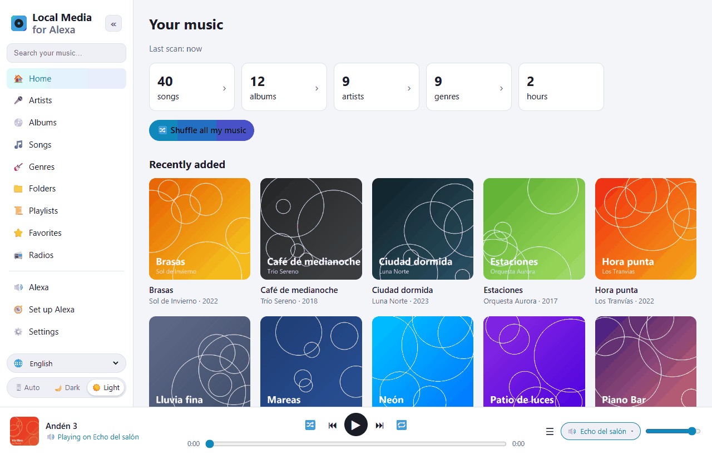
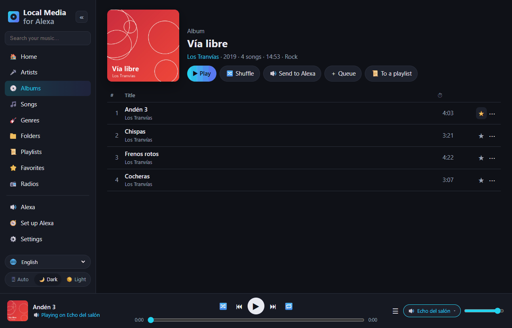
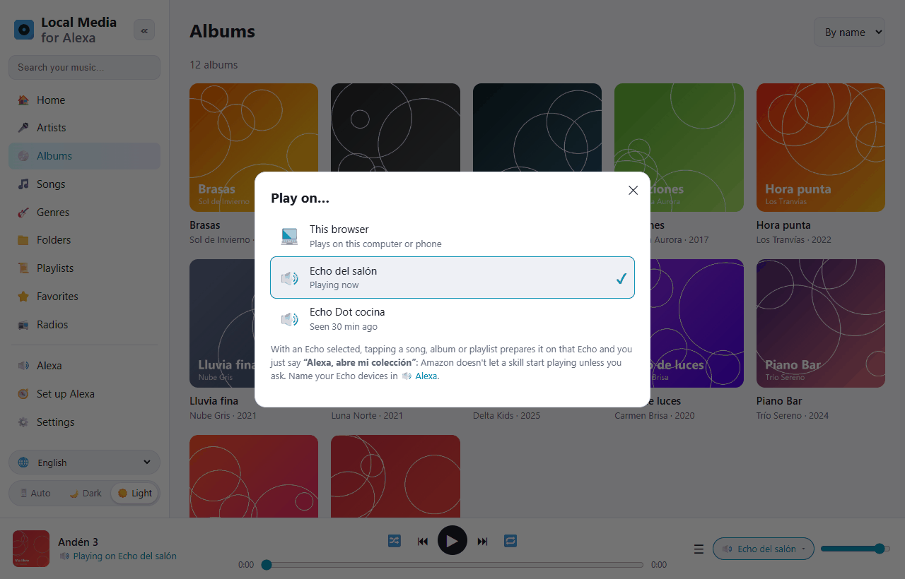
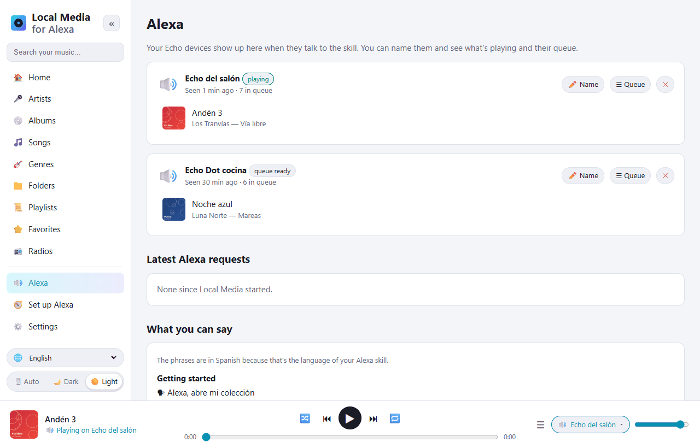
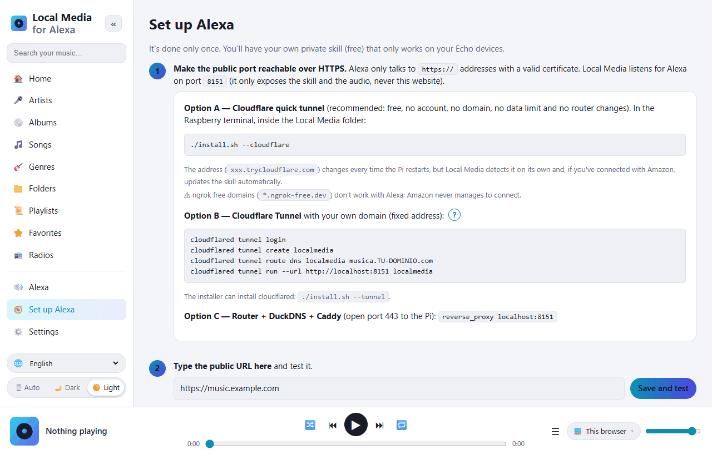

Raspberry Pi · Alexa skill · Free
Your music collection, on Alexa
Local Media plays the music stored on your Raspberry Pi on your Echo devices, by voice. A free, self-hosted alternative to My Media for Alexa: no relay servers, no third-party accounts — everything stays at home.

Just ask Alexa
The skill works in English (US, UK) and Spanish (Spain, Mexico, US).
- “Alexa, open my collection”
- “Alexa, ask my collection to play Queen”
- “Alexa, ask my collection to play the album Abbey Road”
- “Alexa, ask my collection to play music from the eighties”
- “Alexa, ask my collection what's playing”
- “Alexa, next” · “Alexa, shuffle”
What it does
Everything you'd expect from My Media for Alexa, running on your own hardware.
Play anything by voice
Artist, album, song, genre, folder, playlist, year or decade — with fuzzy search that copes with what Alexa mishears.
All your formats
MP3 plus FLAC, WMA, OGG, OPUS, WAV, ALAC, APE… transcoded on the fly with ffmpeg, with seeking and resume.
USB, SD, NAS & DLNA
Scans local drives and mounted shares, and plays from UPnP/DLNA servers like Plex, Jellyfin or MiniDLNA.
Playlists & favorites
Imports M3U, PLS and iTunes playlists. Create your own, add tracks by voice and mark favorites ⭐.
Radios & audiobooks
Internet radio stations and audiobooks that remember where you left off.
Every Echo, its own queue
Several Echo devices with independent queues, multi-room groups, and cover art on Echo Show.
A web app to manage it all
Open it from your phone or computer at home. Translated into 10 languages, with light and dark themes.




Install in a few minutes
Requires a Raspberry Pi 3/4/5 or Zero 2 W with Raspberry Pi OS (Bookworm or later). It also runs on any x86 Linux or with Docker.
Run the installer
sudo apt update && sudo apt install -y git git clone https://github.com/DivolandiaLabs/Local-Media-for-Alexa.git cd Local-Media-for-Alexa chmod +x install.sh ./install.sh --cloudflare
Add your music
Open http://PI-IP:8080, go to Settings, add your folders and press Scan now.
Connect Alexa
Follow Set up Alexa — about 10 minutes, only once. Then say “Alexa, open my collection”.
Full documentation, Docker instructions and troubleshooting are in the README on GitHub.